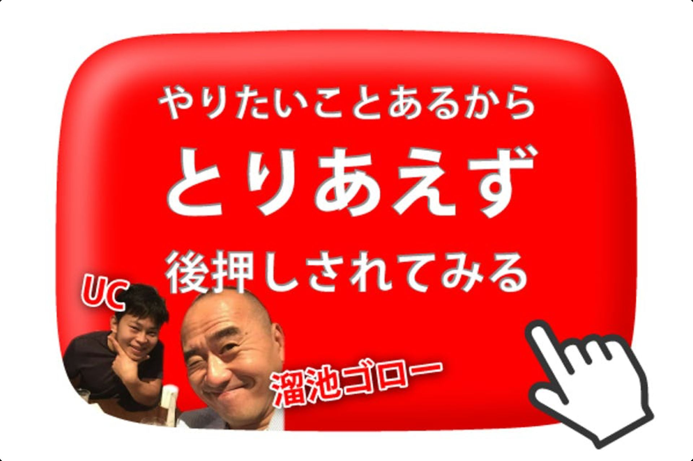

| 70人に聞いた！ 会社を辞める前にやっておくべきこと (UCブックス) | |
| UC | |
| (2018) | |
1
７０人に聞いた！
会社を辞める前に
やっておくべきこと
UC
目次
2
1. まえがき
僕は2015年にTIS株式会社というIT系の会社に入社し、そこで3年
間働いたあと、退職して今はエストニアというところに住んでいま
す。
働く前は1年間ニートをしており、入社が決まった時から働いて借
金も返して少しお金を貯めたら辞める！3年間で辞める！と決意し
ており、2018年3月31日のカレンダーに『退職日』と記入したこ
とを覚えています。
実際に退職の話を上司にしたのは辞める半年くらい前だったのです
が、言い出すのも不安ですし、その後会社に通うことに支障が出な
いものかも不安でした。
また、辞めた後どれくらい貯金が持つのか、僕がいなくなることに
全く問題がないか、辞める前にしておくべきことは何なのか。
辞める事への期待の反面、不安がこみ上げていたのも事実です。
辞めてみたら思ったより楽しいことの方が多く、抱えていた不安は
余計なものであったことの方が多いように思えます。
しかしながら、準備しておく事に越したことはありません。
3
この本では、僕が退職にあたり、まわりの退職経験者に聞いて回っ
た『会社を辞める前にやっておくべきこと』をつらつらと羅列して
おります。
参考になるものと、そうでないものは人によって違うと思いますが、
是非読んでいただき、次のステップへ繋げる１歩に貢献できたら嬉
しいです。
4
2. 会社を辞める前にやっておくべきこと
5
秋田紘志さん
会社名・役職
愛知県庁
あなたが会社を辞める前にやっておくべきと考えることを100字以内で教
えてください
①人からお金を払ってもらえるレベルのスキル、技術を1つ以上習得する(1〜3年)
② ①の技術、スキルにプラスしたら更に世の中の役に立てるであろう相乗効果の高い他の技
術、スキルを見つけておく。(辞めた後に組み合わせてさらにスキルアップするため)
③ ①と②を組み合わせて理想とする生活、収入を得ている人を見つけて、可能なら会いにい
く
その他メッセージ
スキルがあれば何をしてもどこでも生きていけます。最後は独立するために、人からお金を
もらえるレベルのスキルを身につけることばかり考えていました。会社には給料以上の価値
を提供して、必要なノウハウを学ぶ場という認識。
必要なスキルを身につけたら辞めたらいいのではと思います。
参加までに僕が身につけたスキル
公務員
→正確かつ緻密、完璧な事務処理能力(企画書、記者発表資料、作業マニュアル)
→観光振興(愛知万博)
→人事、組織制度(人事課)
→元公務員という社会的信用力
株式会社DENSO
→講師として大勢の人の前でわかりやすく話す能力
不動産
→割安な不動産の見つけ方
6
→アパート、テナントの運営スキル
→旅館の運営スキル
→融資スキル
経営
→コミュニケーションスキル
→資金繰りマネジメント
→節税スキル
→営業スキル
農業
→無農薬野菜の作り方
→お米の作り方
その他
→英語でのコミュニケーション
7
山本山さん
会社名・役職
無記名
あなたが会社を辞める前にやっておくべきと考えることを100字以内で教
えてください
カードを作る、貯金
その他メッセージ
8
Y.Pさん
会社名・役職
代表取締役
あなたが会社を辞める前にやっておくべきと考えることを100字以内で教
えてください
会社辞めてから「どうするか」考えてみて、その時必要になるある程度の人脈、アテ＋マイ
ンドの強さ ですね。
その他メッセージ
9
成田 武雄さん
会社名・役職
あなたが会社を辞める前にやっておくべきと考えることを100字以内で教
えてください
次の仕事を決めておくこと。
その他メッセージ
一杯おごれ！
10
Tetsuさん
会社名・役職
President
あなたが会社を辞める前にやっておくべきと考えることを100字以内で教
えてください
社長に頭をはたく。
その他メッセージ
11
ヤマザキ ミカさん
会社名・役職
株式会社 栄光
あなたが会社を辞める前にやっておくべきと考えることを100字以内で教
えてください
1.新職探しと決定
2.お世話になった方へのサヨナラ挨拶周りや、お菓子などお礼の品を送ること
3.業務引き継ぎ
その他メッセージ
12
Tさん
会社名・役職
あなたが会社を辞める前にやっておくべきと考えることを100字以内で教
えてください
同期や会社の人とのつながりを大事にすると良いと思いました！なので､しっかりと挨拶す
るとか､感謝の気持ちを述べるとかですか><ごめんなさい｡わからないです･･･
その他メッセージ
今後何をやるか楽しみにしてます！頑張っってください!^^
13
A.Aさん
会社名・役職
あなたが会社を辞める前にやっておくべきと考えることを100字以内で教
えてください
クレジットカードを作る
その他メッセージ
面白い試みです！転職三回、その後は会社役員とか、会社代表やったりしているから、視点
は違いますが、転職した後はローンやクレジットカードなど作りづらくなるので、そういっ
た社会的信用が必要な物は先に行うと勉強です！
14
本田さん
会社名・役職
某 工業 系 、一般
あなたが会社を辞める前にやっておくべきと考えることを100字以内で教
えてください
就業規則の読み込み(退職、有給、資格取得奨励など)。少しのタイミングの調整で色々お得
な福利厚生を受けれたりするので。
その他メッセージ
15
今田章太さん
会社名・役職
あなたが会社を辞める前にやっておくべきと考えることを100字以内で教
えてください
イマプロ代表ディレクター
その他メッセージ
ローンを組んだり、クレジットカードを作れるだけ作っておきましょう。やはり正社員とい
う肩書きは強く、フリーランスは基本信用ゼロと思っておいた方が良い。
16
庄島さん
会社名・役職
野村不動産→日本たばこ産業
あなたが会社を辞める前にやっておくべきと考えることを100字以内で教
えてください
・次の仕事(会社)を決めておくこと。
・辞める(次の仕事をする)理由を明確にしておくこと。
・向こう2ヶ月分くらいのお金を貯めておくこと。
・有給日数、ボーナスの対象期間などの確認。
・お世話になった方との食事。
その他メッセージ
月並みの回答ですが誰かの参考になれば嬉しいです。
17
改井亜矢さん
会社名・役職
某SIerのweb系プログラマ
あなたが会社を辞める前にやっておくべきと考えることを100字以内で教
えてください
自分の市場価値調査。そのため、辞める前に今後自分がなる可能性が少しでもある自分の職
種について、業界問わず就職活動をしてみること。本気で。
あとはお金の整理。信頼がなくなる可能性があるのでクレジットカード作っておくとか笑
その他メッセージ
ちなみに転職歴は五年正社員でweb系プログラマ▶︎三年フリープログラマ▶︎産休もらうため
正社員に契約変更▶︎産休なう【イマココ】です。
世間の荒波に置いていかれそうで不安ですが、応援しています。
18
池マッチさん
会社名・役職
株式会社ジャパンリリーフ 事業部長
あなたが会社を辞める前にやっておくべきと考えることを100字以内で教
えてください
自身の時間をその会社に売ってる（買われてる）と思うようになったらそれが辞め時。一度
きりの人生。自分の時間を大切に考えましょう。とはいえ、石の上にも3年。短期間ではた
だのバカになってしまうのかと思います。
その他メッセージ
19
上田 惠利加さん
会社名・役職
チャプツー
あなたが会社を辞める前にやっておくべきと考えることを100字以内で教
えてください
その会社でお世話になった人に感謝の気持ちを伝えること。ご縁はずっと続くから、ずっと
大事にしたいなぁと思います。
その他メッセージ
UCに幸あれ！
20
R.Tさん
会社名・役職
東京海上日動火災保険株式会社
あなたが会社を辞める前にやっておくべきと考えることを100字以内で教
えてください
自分が自信のあることと、どんなに頑張ってもそう簡単じゃないってことを整理すること。
次の転職先で、壁を越えようとかチャレンジすることだけに頑張りすぎたら自分を可愛がれ
なくなるし、自分の強みを意識して生きた方が人生も楽しいはずだから。
その他メッセージ
またいつか会えたらいいね！
21
Wさん
会社名・役職
ないしょ♪
あなたが会社を辞める前にやっておくべきと考えることを100字以内で教
えてください
1、社内身辺整理（貸与されているものの返却や経費精算等も含めて）
2、転職先が決まっている事
3、有給消化
4、社内規定を再確認する（変更されてるかも）
6、今まで以上に仕事をこなしておく事
その他メッセージ
喧嘩して辞めるパターンにはならないよう、逆に「惜しまれる」人材となって退職するのが
一番スカッとします。なので、退職を心に決めた時点から、私しか分かっていなかった事を
さらに増やしていって、関係部署にも存分に「役に」たってあげて、退職願いを出して「引
継ぎ」をする時点になったら復讐開始!
あれもこれも、全部私がやってた事なのでこれからは貴方がちゃんとやってくださいな♪
と。尋常でない仕事量をこなさせてたと反省を促し、願わくばその仕事に従業員が増員され
る事を願いつつ、職場を後にする。。。これが何社も転職してきた私の退職時の行動パター
ンです（笑）
22
まるさん
会社名・役職
特殊ガラス加工メーカー
あなたが会社を辞める前にやっておくべきと考えることを100字以内で教
えてください
退職金の有無や失業保険申請、退職におけるトラブルの対処法を調べておく。自分は退職届
け提出月がボーナス支給月と被っていたためにボーナスを支給しないと言われた。
その他メッセージ
23
小野ちはるさん
会社名・役職
Smalllest Bar 店主
あなたが会社を辞める前にやっておくべきと考えることを100字以内で教
えてください
辞表を書く以外特になし
その他メッセージ
24
梶田航平さん
会社名・役職
株式会社FLace 代表取締役社長
あなたが会社を辞める前にやっておくべきと考えることを100字以内で教
えてください
仕事の内容にもよる部分は省いて、次に自分が何をどうするのかを決めること、また給与明
細に不備がある場合は、会社のためにも訴えなければいけないのでキチンと保管しておくこ
と。目的も意欲もなく辞めることはオススメしない。
その他メッセージ
おっぱい。
25
Kyo paxiさん
会社名・役職
株式会社旅と平和 代表取締役
あなたが会社を辞める前にやっておくべきと考えることを100字以内で教
えてください
サハラマラソン
その他メッセージ
考え始めたら止めろ
26
福田春道さん
会社名・役職
販売
あなたが会社を辞める前にやっておくべきと考えることを100字以内で教
えてください
自分の趣味があるといい。(様々なコミュニティがあると違ったところから面白い話がやって
くる。常に広い心でいればなんとかなるのである)あせらないかな。
その他メッセージ
27
Kさん
会社名・役職
信用金庫・一般
あなたが会社を辞める前にやっておくべきと考えることを100字以内で教
えてください
現状における自分の見つめ直しと次のステップへの構想を練る。社外とのつながりの構築。
ある程度生きていける貯金。
その他メッセージ
28
M.Yさん
会社名・役職
あなたが会社を辞める前にやっておくべきと考えることを100字以内で教
えてください
自分で稼げる力をつける(プログラミングやアフィリエイト、投資など)
その他メッセージ
29
田中 住周さん
会社名・役職
店長
あなたが会社を辞める前にやっておくべきと考えることを100字以内で教
えてください
兎にも角にも有給休暇の消化。次の会社(ある場合は)に有給休暇の消化が終わるまで待って
もらう。
その他メッセージ
30
今井康史さん
会社名・役職
外資系メーカー・研究開発部長
あなたが会社を辞める前にやっておくべきと考えることを100字以内で教
えてください
在職中に学んだことはしっかりまとめておく。(あくまで自分がやったことに関して。企業秘
密はダメ）仕事はしっかり区切りをつけ、引継ぎをしておくこと。（最後の瞬間に、その人
の印象が決まります。この印象がやめてからあとの人間関係の基礎になります。）
その他メッセージ
31
H.Sさん
会社名・役職
保険 役員
あなたが会社を辞める前にやっておくべきと考えることを100字以内で教
えてください
定年退職の場合は、銀行口座、保険契約、年金、カード、公的制度など今まで加入している
制度などを、一覧表にする必要がある。細かいのを入れると５０〜１００ぐらいある。そし
て不要なものは解約するべし。それから以後の生活設計をしっかりして資金計画を立てるこ
と。
その他メッセージ
32
Sさん
会社名・役職
前職・三井住友銀行
あなたが会社を辞める前にやっておくべきと考えることを100字以内で教
えてください
・退職後もサービスが続くよな福利厚生サービスを登録※退会方法が無い・複雑なため長い
間利益を得ることができる
・将来的に使えそうな文章をパクる。契約書のひな形や規約類※私はリスクを負いません
その他メッセージ
・福利厚生でほしいものを先に買っておく
33
よしゆきさん
会社名・役職
敬友自動車
あなたが会社を辞める前にやっておくべきと考えることを100字以内で教
えてください
貯金と転職先
その他メッセージ
34
佐原光さん
会社名・役職
株式会社ミュージアムクルー
あなたが会社を辞める前にやっておくべきと考えることを100字以内で教
えてください
・その後の将来のプランを明確にしておくこと
その他メッセージ
35
匿名さん
会社名・役職
PwC コンサルタント
あなたが会社を辞める前にやっておくべきと考えることを100字以内で教
えてください
最大限の住宅ローンを組み、山手線内駅から5分以内の物件を買う。
その他メッセージ
36
S.Hさん
会社名・役職
あなたが会社を辞める前にやっておくべきと考えることを100字以内で教
えてください
今いる会社に対してきちんと交渉する(業務内容、業務時間、勤務地、報酬、福利厚生など
など)
その他メッセージ
37
Y.Aさん
会社名・役職
証券
あなたが会社を辞める前にやっておくべきと考えることを100字以内で教
えてください
・ボーナス月に辞める
・クレジットカードや部屋を借りる等、信用が無いと作れなかったりできないことを今のう
ちにしておく
・辞めてからも付き合いたい仕事ができる先輩とかには会いやすいうちに飲みに行っておく
その他メッセージ
38
キムトモさん
会社名・役職
バスロケ開発企業
あなたが会社を辞める前にやっておくべきと考えることを100字以内で教
えてください
転職した先を考える。
・転職をして年収を上げるのか？
・年収は下がっても遣り甲斐か？
・家族のためになる会社か？
➡ 待遇・休日・時間など
・最終的に起業するのかしないのか？
その他メッセージ
辞めようと思ったときが実はチャンス❗
上司・組織・社長がアホに見えたとする。
そんな理由なら辞めること止めるべきだ。
企画書を書け❗事業計画書を作れ❗新規事業の提案書を作ってプレゼンしろ‼
アホを納得させられないなら、お前の上がアホだ。
39
Y.Sさん
会社名・役職
自動車株式会社、課長
あなたが会社を辞める前にやっておくべきと考えることを100字以内で教
えてください
残務処理！
その他メッセージ
40
大滝さん
会社名・役職
あなたが会社を辞める前にやっておくべきと考えることを100字以内で教
えてください
納得させられるような「理由」を考えておくこと
その他メッセージ
41
SWAMYさん
会社名・役職
無回答
あなたが会社を辞める前にやっておくべきと考えることを100字以内で教
えてください
お世話になった方々にご挨拶
その他メッセージ
42
Y.Kさん
会社名・役職
医薬品
あなたが会社を辞める前にやっておくべきと考えることを100字以内で教
えてください
・辞職を検討してる旨上司、同僚に相談する
・職場環境に対する不満がある場合は、上司に相談し、改善の余地（配置転換等）があるの
か確認する
・直接転職経験者の話を聞き、メリットとデメリットを把握する
・実際に他社の面接を受けるなど、自分の現状の市場価値を把握する
その他メッセージ
43
つかはら たけひろさん
会社名・役職
社長
あなたが会社を辞める前にやっておくべきと考えることを100字以内で教
えてください
終わり良ければ全て良し！有給消化なんかせず最終日までしっかりと働く。そしてお世話に
なった方へ感謝の気持ちを込め最終日にプレゼントを上げる。退職して15年、未だに前職の
人達と交友関係は続いている。これが俺流の有給休暇の使い方
その他メッセージ
44
小林友美さん
会社名・役職
日本保育サービス 専門職 保育職
あなたが会社を辞める前にやっておくべきと考えることを100字以内で教
えてください
辞めたあとの進路、やりたいことを考えておく。ただでさえ安定した収入がなくなることの
不安がストレスとなる為、目的なく辞めるとそのうち心が病む
その他メッセージ
45
パパさん
会社名・役職
株式会社〇〇 代表取締役
あなたが会社を辞める前にやっておくべきと考えることを100字以内で教
えてください
目標の設定。情報収集。準備、段取り。お世話になった方へのご挨拶。（あくまでも、置か
れている環境、家庭などがの有無で違ってくると思う）
その他メッセージ
ご時世や職種、自分の置かれている環境によるでしょう。前進も大切だけど、少し振り返る
勇気も必要な感じもあると思う。時と場合を見極める事もかな？！
46
かりんさん
会社名・役職
ジェーシービー
あなたが会社を辞める前にやっておくべきと考えることを100字以内で教
えてください
やりたいことをきめる、権利収入を得る仕組みをととのえておく！
その他メッセージ
食べていけるならやめればいいこと
時間もったいないからやめよう！
47
関口 智也さん
会社名・役職
あなたが会社を辞める前にやっておくべきと考えることを100字以内で教
えてください
顧客への御礼参り、名刺の整理
その他メッセージ
48
貴子さん
会社名・役職
エムエムシー企画 営業事務
あなたが会社を辞める前にやっておくべきと考えることを100字以内で教
えてください
辞めたあとにやりたいことを整理しておく、そのために必要な資格取得、現会社での実績、
違う業界や業種の人たちと仲良しになっておく...くらいかな。
その他メッセージ
ありきたりなことしか答えられずごめんなさい！私は新卒で販売職３年→営業職２年→事務
職４年目で、業界も業種も違うものをやってるから言えることなんだけど、全然違う環境で
もこれだけ対応してこれだけの実績を出したよ！っていうアピールができたら、次の場所で
も必ずいかせると思う◎あとは、次の環境と自分の性格がちゃんとマッチングしてるかも重
要。もちろん働いてみてからじゃないとわからないこともあるけど、イメージをするために
実際の業務内容やお給料制度のことは、めちゃくちゃしつこく聞いた。それで納得できたら、
ある程度のことは乗り越えられると思う。
49
伊達 逆さ富士さん
会社名・役職
メーカー研究職
あなたが会社を辞める前にやっておくべきと考えることを100字以内で教
えてください
今の職場にいる場合とやめた場合の10年後の姿 (給与、やりたいことができるか、もし次に
やめた場合にスキルがついているか)
その他メッセージ
50
あずささん
会社名・役職
病院 理学療法科
あなたが会社を辞める前にやっておくべきと考えることを100字以内で教
えてください
自分の受け持ちの患者さんの申し送り（キャラクター＞じょーずなコミュニケーション方法
＞疾患の特徴）あとは、職場の人たちにいつもより「ありがとう」をいっぱい言うこと、あ
とは偉い人に人と病院のダメなところを言って辞めました。
その他メッセージ
今日のご飯は、ミートボールだし、今日のお風呂はLUSH入れたい。ゆーしが一番かっこい
いし、伊藤英明より好き。あいらぶゆー
51
落司貴之さん
会社名・役職
あなたが会社を辞める前にやっておくべきと考えることを100字以内で教
えてください
前提、これから日本は斜陽していく
1.キャリア形成をする、なにかのプロになれるキャリア形成を考える。
キャリア形成とはなにかの一流になること。一流を掛け合わせられる意味での別の仕事内容
ならおけー！
2.これから伸びる業界にいく
3.失業保険をもらうための相談を総務の人にする
その他メッセージ
52
藤田さん
会社名・役職
あなたが会社を辞める前にやっておくべきと考えることを100字以内で教
えてください
上司におごられまくる。
その他メッセージ
53
芹沢さん
会社名・役職
IT 系
あなたが会社を辞める前にやっておくべきと考えることを100字以内で教
えてください
現職でやり残した事が本当にないか、確認。
残すべきもの、残すべきでないものの整理、そして社内、社外への確認。
その他メッセージ
54
佐藤雄大さん
会社名・役職
ブリッジドット株式会社
あなたが会社を辞める前にやっておくべきと考えることを100字以内で教
えてください
起業でやめるとすれば、どこでもプロとしてお金がいただける技術と1年間無収入でも生き
てる貯金
その他メッセージ
55
くぼた さきさん
会社名・役職
あなたが会社を辞める前にやっておくべきと考えることを100字以内で教
えてください
辞める理由の明確化
何故辞めるのか？その気持ちは揺るがないものなのか。親しい同僚に引き止められたとき、
人事に待遇改善を提案されたとき、それでも辞める明確な意思があるかが一番大事かなと。
あとは有休消化や貯金なんかは必須かなと。(私は有休消化も貯金もできなかったけどw
その他メッセージ
辞める前にの定義が、辞める決断をした後なのか、前なのか、その後転職するのか、しない
のか、、によって結構変わるかなと。
何もかも決まっているなら有休消化かな。笑
56
泰兵さん
会社名・役職
株式会社谷川建設
あなたが会社を辞める前にやっておくべきと考えることを100字以内で教
えてください
有給休暇の日数を確認、取得。辞める時の精算。辞める時に退職金ではなく逆に支払いがあ
ることがある。
その他メッセージ
会社によって辞めるタイミングが違うと思うが、そのタイミングをしっかりと考えてデメリッ
トがないようにすること！
57
蜂須賀さん
会社名・役職
病院 リハビリ
あなたが会社を辞める前にやっておくべきと考えることを100字以内で教
えてください
次の仕事に目星をつけておく。
健康保険の切り替えについて考えておく。
失業保険などの手続きの確認。
その他メッセージ
58
松乃わなりさん
会社名・役職
株 コンディション 代表取締役
あなたが会社を辞める前にやっておくべきと考えることを100字以内で教
えてください
なんでも良いのでその職場で成果を出してから辞める。負け癖がついたらどうにもならんの
で。
その他メッセージ
59
メガワフユミさん
会社名・役職
あなたが会社を辞める前にやっておくべきと考えることを100字以内で教
えてください
仕事ができそうなコネが少しでもある状態でスタートする。辞める前に会社員と並行して初
めてみてやったいけそうだと少しでも思えたら踏み出してみる。つまり、全く何もやってな
くてコネもない状態でのスタートは避けたほうがいいと思います
その他メッセージ
60
林 雅大さん
会社名・役職
あなたが会社を辞める前にやっておくべきと考えることを100字以内で教
えてください
お客さんへの挨拶周り。
どんなに優秀でも、自分一人で出来る事には限りがある。
すぐに仕事にならなくても、いろんな知り合いが居るのは、人生にとってプラス！
その他メッセージ
61
Sさん
会社名・役職
J
あなたが会社を辞める前にやっておくべきと考えることを100字以内で教
えてください
次の職場を探す
その他メッセージ
62
小倉広さん
会社名・役職
株式会社小倉広事務所
あなたが会社を辞める前にやっておくべきと考えることを100字以内で教
えてください
辞めた後も、仲良く付き合えるように立つ鳥跡を濁さず、きたときよりもうつくしく
その他メッセージ
UCらしいチャレンジ、素敵。応援します！
63
Oさん
会社名・役職
人生 劇場
あなたが会社を辞める前にやっておくべきと考えることを100字以内で教
えてください
ラジオ体操＞あらゆる個人情報のセキュリティ確保＞腐る私物の撤収＞腐らない私物の撤収
（優先順位あり）＞同僚への根回し
その他メッセージ
64
だじゃれあまのさん
会社名・役職
VIVITA Japan, Software Engineer
あなたが会社を辞める前にやっておくべきと考えることを100字以内で教
えてください
それまでコンタクトがあった人、特にアドバイスなどをもらった人にできるだけ丁寧に挨拶
しておくこと。業界によってはとっても狭くて違う会社同士ですぐにめぐり会ったりする。
その他メッセージ
ソフトウェアエンジニアって日本でももうすでに会社とかの縛りや「くくり」はあまりなく
なりつつある。基本、自分のキャリアをどうとらえるか。そのなかで自分は何をパッション
をもって進めていきたいのかをちゃんと把握しておけば、会社移ろうが起業しようがあまり
関係ない、と思います。
65
URAJIさん
会社名・役職
日用品 商品開発 課長代理
あなたが会社を辞める前にやっておくべきと考えることを100字以内で教
えてください
退職後にもらえる支援や金額が全然変わってくるので、会社都合退職にしてもらうべし。あ
とは成功するかしないか、判断が微妙な事業はサラリーマンのうちに会社の資金を使って試
行してみるべし。悪い意味ではなく、良い意味で会社のお金は使うべし。退職時には人間関
係を拗らせずに円満退社すべし。天下無敵、とは敵を作らないこと。
その他メッセージ
66
いいづかさん
会社名・役職
あなたが会社を辞める前にやっておくべきと考えることを100字以内で教
えてください
10人分の失敗をする
その他メッセージ
辞めると決めてからやりたいことって色々あるよね
会社の金つかって、資格とったり
人脈と履歴書を育てる
67
まんぼう9さん
会社名・役職
農業
あなたが会社を辞める前にやっておくべきと考えることを100字以内で教
えてください
「社長を飲みに誘う」
会社の中できっと１番誘いづらい人だからこそ、思いきって門をたたくと以外な答えが返っ
てくるかも。私の場合、辞めることを上司に伝えた後、社長を飲みに誘ったら、腹を割って
色んな話をして、有意義な時間を過ごさせていただいた。
その他メッセージ
うまくいくといいね。
68
YOshiroさん
会社名・役職
自営業
あなたが会社を辞める前にやっておくべきと考えることを100字以内で教
えてください
・なんでやめるのかを明確にする。
・社会的信用というのが一度無くなる事を覚悟する
その他メッセージ
応援してまーす！
69
ミヤタケさん
会社名・役職
代表
あなたが会社を辞める前にやっておくべきと考えることを100字以内で教
えてください
失業保険もらう
カードは2社以上作る(限度あげておく)
創業支援手当等でもらえる制度はふんだんに活用する
今の会社の名刺で会える人会っておく
その他メッセージ
70
原ともみさん
会社名・役職
フリーランス
あなたが会社を辞める前にやっておくべきと考えることを100字以内で教
えてください
営業スキルでもプログラミングでもなんでも良いから、独立した方が年収が増えそうな技術
を身につけること。
その他メッセージ
71
Takaki Nakamuraさん
会社名・役職
アクセンチュア株式会社 アクセンチュアストラテジー マネジャー
あなたが会社を辞める前にやっておくべきと考えることを100字以内で教
えてください
お世話になった社内外の方に、これまでの御礼、退職する事実、次の勤め先での仕事内容等
について説明する(在職中に築いたリレーションは自分にも相手にも財産となる。自分のネク
ストステージをお知らせしておくことで、その方々に対し何らかの還元が出来る可能性が生
まれます)
その他メッセージ
72
小林さん
会社名・役職
トヨタ自動車東日本
あなたが会社を辞める前にやっておくべきと考えることを100字以内で教
えてください
・お金が借りられるなら運用不動産一棟購入を勧める（勉強と目利きは必須）
・社外ネットワークの構築
その他メッセージ
73
ざっきーさん
会社名・役職
保育士
あなたが会社を辞める前にやっておくべきと考えることを100字以内で教
えてください
自分は何が得意で、どんなことで社会に貢献できるのかを、ぼんやりとでも見つけておくこ
と。また、どんな生き方をしたいか明確にしておくこと。
その他メッセージ
74
ひがしちゃんさん
会社名・役職
ニート
あなたが会社を辞める前にやっておくべきと考えることを100字以内で教
えてください
クレカ作りや携帯の割賦払いなど審査系のこと
その他メッセージ
75
3. あとがき
アンケートをみてみると、こんな意見が多かったと思う。
・ 次やることを決めておく
・貯金
・クレジットカードを作る/不動産投資
・有給消化
これは日本の社会構造と、現実を見せつけるような結果だとも捉え
られる。
日本人は個人の口座に世界で最も貯蓄が多いと言われている。しか
しそれは、『貯金しなければならない』という残念な現状があり、
『今』の自分に投資する余裕がない証拠でもある。
76
・
次やることを決めておく
やることを決めて動くのは難しい。やりたくないことをやらなく
する方が簡単。今の会社がクソほど嫌いで、文句言っている暇があ
ればすぐに辞めてしまえばいい。
・ 貯金
貯金はもちろんあった方がいい。ただ、失業保険というものもあ
るから、それを使えばある程度生活できるはず。
・ クレジットカードを作る/不動産投資
クレジットカードがこんなに流行っているのはただのポイントの
ため。そしてクレジットカードを使うことは借金を作ってる事でも
ある。
現金を使わずに決済したいならデビットカードでもいいし、それで
いいならTransferwiseなどのサービスを利用しさえすれば、ほとん
ど審査なしにすぐできる。
カードじゃなくて、LINEpay等の決済でも代用できるし。
不動産投資等のまとまったお金が必要なことに興味がある場合は、
会社員のうちにやっておいた方がいいと思う。
これこそ社会的信用が必要となる。
僕もやってみたかったなーと思いつつ、毎月自分がやりたい事に全
力全資金投資していたので、そこまで余裕がなかった。
77
ちゃんと調べていればやれたと思うので、後悔してないわけではな
い。
後々してみたいなとは思っている。
・ 有給消化
辞めて一生休みにすることだってできるのに、会社にいる間に数ヶ
月分の有給を取りきるなんて考える必要はない。アンケート中で、
たけひろさんが答えてくれた通り、有休消化なんて考えず、最後ま
で働いて最終日にみんなにプレゼントを贈るのが理想でカッコいい
案だと思う。
78
上記の意見とは裏腹に、自分の退職の経験も含め、個人的にはもっ
と推奨にした方がいいと思える意見もあった。
・お世話になった人にお礼
・会社の規則読み込み
・サハラマラソン出場
・社長を飲みに誘う
・ サハラマラソン出場
これは「パクチーハウス東京」を作り、paxiという言葉を作り、
日本にパクチーを広めた佐谷恭さんの意見だ。
会社員も安定してないぜ！なんて意見を言う人もいるけれど、明日
の倒産を恐れている会社なんてほとんどないだろう。それは安定と
言っていいでしょ？
安定して、不安なく自由に使えるお金がある時には、バカげた事を
たくさんした方がいい。
お金がなくなると、ストイックに生きる方法が身につくが、バカげ
たことに手を出しにくくなるから。
サハラマラソンは僕の人生を変えたビッグイベントでもあり、世界
一過酷なマラソンと呼ばれている。
自分の衣食住の全てを担ぎ、砂漠の中を250kmを走る。会社員で
これができたら最高だ。
79
・
社長を飲みに誘う
これはまんぼう9さんの意見。僕も会社を辞める前に自分の会社
の社長と会ってみたいと思い、パーティーで社長に話しかけたこと
がある。
だけど彼のように、飲み会まで誘うことはしていない。してみれば
よかった！これこそ後悔。
僕が働いていた会社はホワイト企業だったし、悪い人はいなかった。
だけど、面白い人もあんまりいなかった。
しかしながら退職を目の前にして、沢山の「仕事に関係のない社内
の人」と関わるようになった。
するとこの会社にも面白い人がいて、捨てたもんじゃないと思えた。
実際、退職した後もこういう人たちとは交流がある。
80
最後に自分の話をして終わりたいと思う。
僕は仕事を辞めてから世界を回ってみたいと思って、最初の国をエ
ストニアとした。
前から海外に住んでみたい。と思っていたのもあるけど、エストニ
アに来てみたら、初めて「ここなら住める！」という想いが湧いた
ので住んでみる事にした。
また、「海外で働いてみたい！」という気持ちもあった。全然ここ
で働くつもりなんてなかったけど、エストニアでは起業が簡単とい
うことを聞いたので、TORIAEZU OÜ（とりあえず株式会社）とい
う会社をとりあえず創業してみた。
やる事は本当に決めずに作ったので、今まで色々やってみた。
・偽内定書の配布サイト
・TENGAの販売
・ふんどしの販売
・観光案内
・飲みツアー
・企業視察案内
・オンラインサロン
81
大体は上手くいかなかったけど、上手く言ったものもあって、それ
を軸とした事業内容でTORIAEZU OÜ（とりあえず株式会社）は生
き長らえている。
長くなったけど、オンラインサロンの宣伝をしたら本当にお終い。
▪️
電子国家エストニア研究会

電子国家として注目されているエストニアをテーマに、情報提供・交換を目的とした視聴者
参加型のコミュニティ。
主に起業家、スタートアップやIT関連に興味がある方が対象。
移住や多拠点生活に興味がある方も大歓迎！
82
▪️
TORIAEZUサロン

「TORIAEZUやってみたいことがあるけどどうしよ...」と悩んでいる人を参加者皆で後押し
しつつ、自分の調子が乗らない時は逆に鼓舞してもらうためにできたサロンです。 僕はここ
で集まったお金で、エベレストに登頂します！ 僕UCと伝説のAV監督溜池ゴロー氏によりお
送りします。
読んでくれてありがとうございました！
83

中嶋 雄士（なかしま ゆうし）
ニックネームはUC。
大学卒業後インターナショナルニートに。その後世界一過酷と言われるサハラマラソン
250kmを走破し、その経験をきっかけに就職を決意。
TIS株式会社で銀行系のシステム保守に3年間従事する。
会社員時代もサハラマラソンで出会った言葉「ノータイムポチ」（直感をもとに即決するこ
と）を信念に
UC少額奨学金制度 の設立や、世界初の例のプールパーリーを主催、会社員の可能性に挑み
続けた。
現在はエストニアで TORIAEZU OÜ を創業。"Empower your TORIAEZU mind"を理念と
し、世界の「とりあえず」の声を形にする支援をしている。
活動内容は Facebook で発信しています。
お気軽にフォローお願いします。
ライフストーリはこちら
https://toriaezu.ee/home/introduction
84
85
86